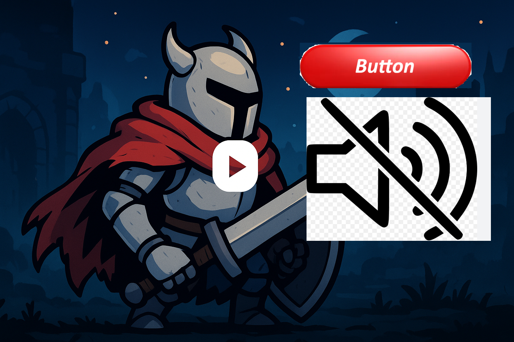
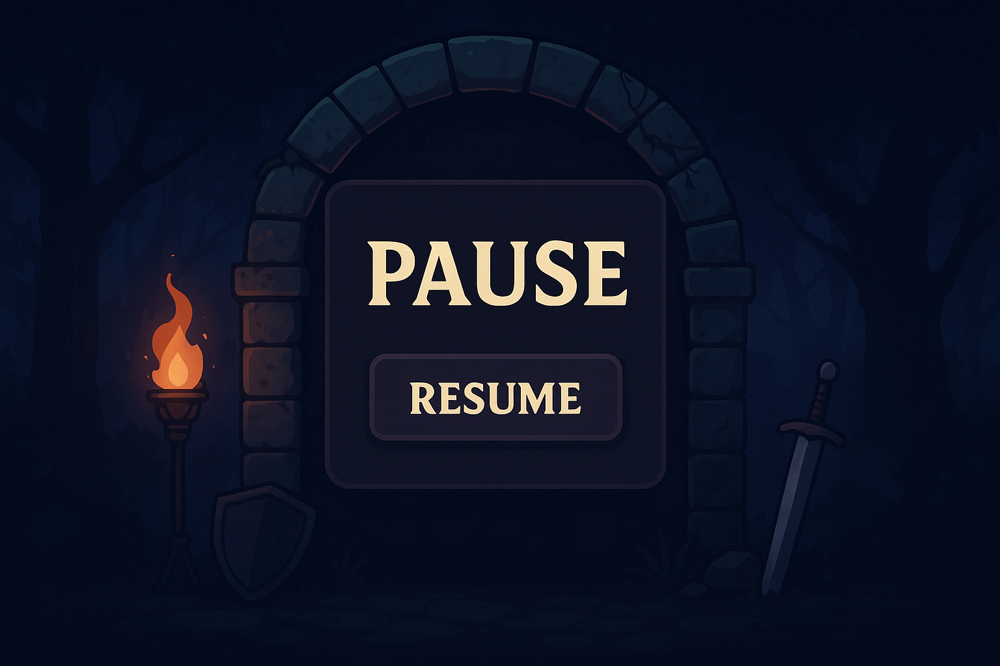
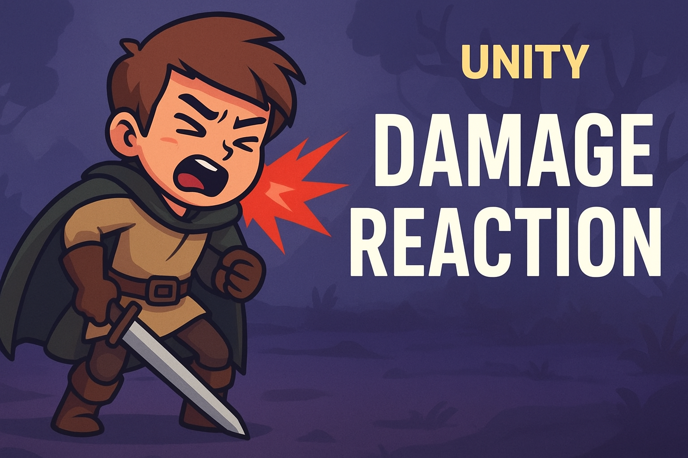
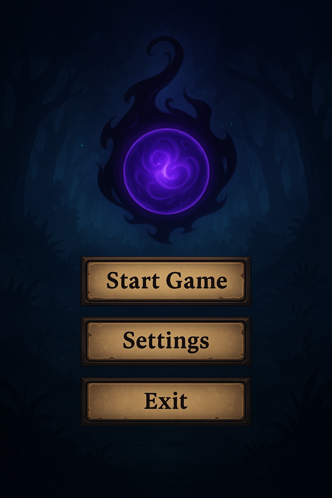
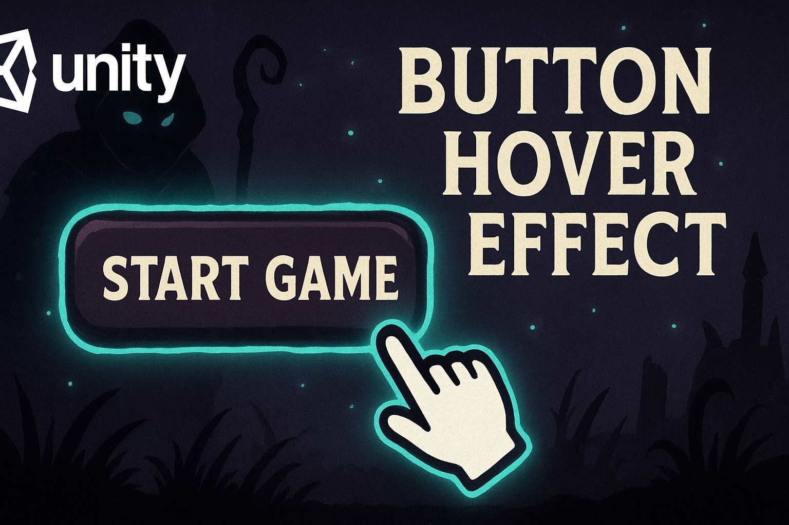
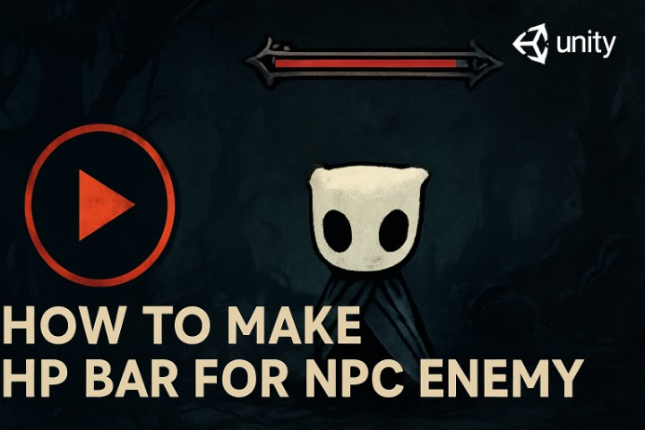
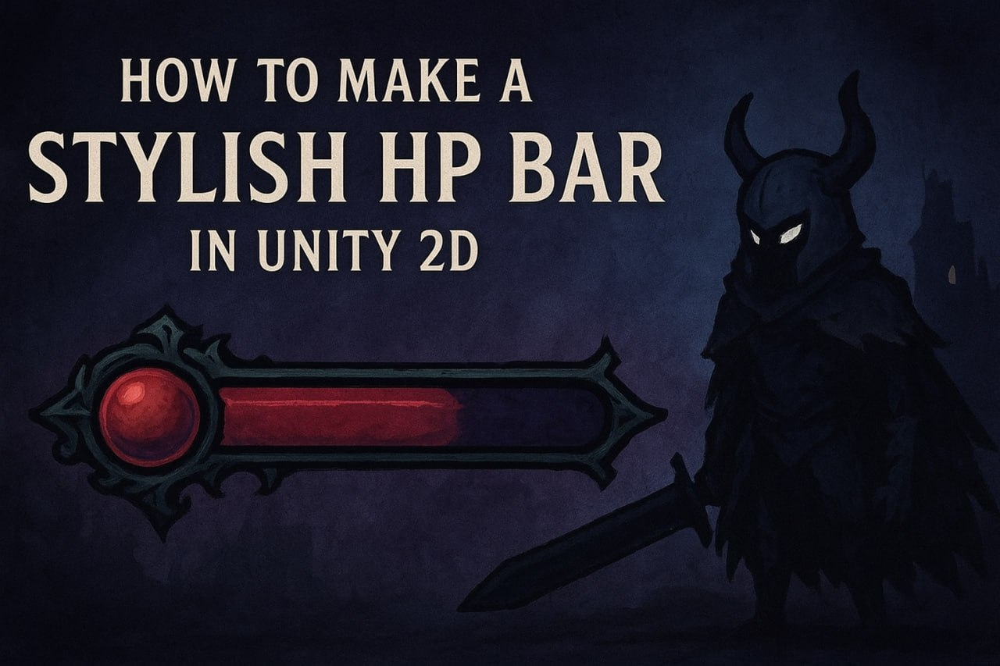
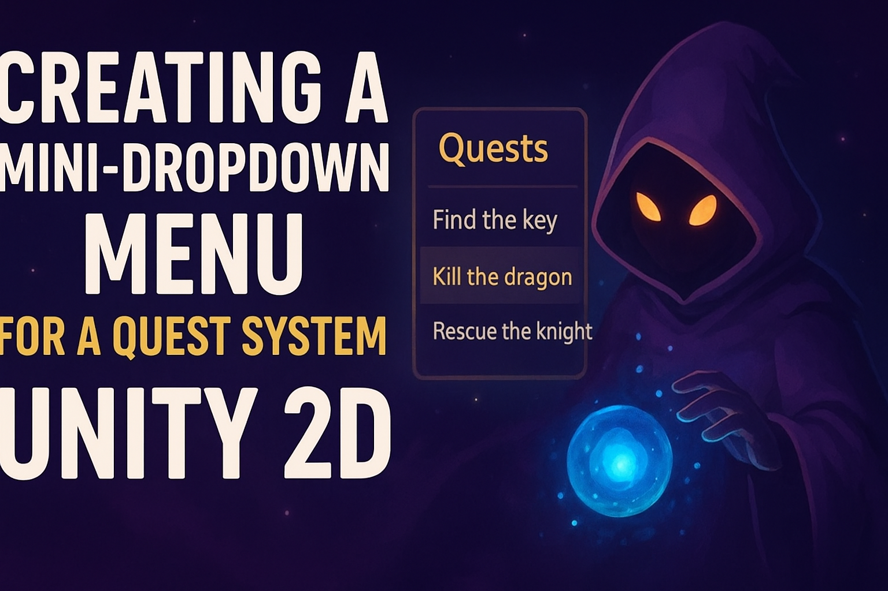
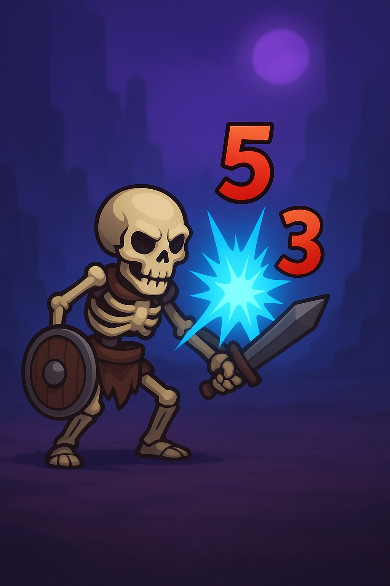
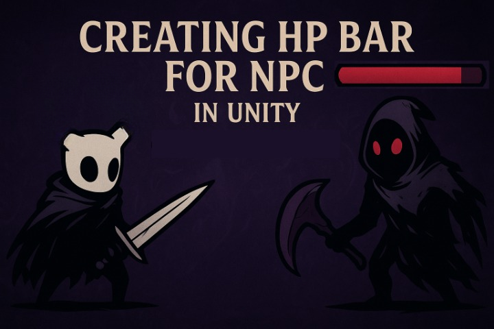

Створення меню та екранів гри
🎮 У цьому уроці ми навчимося оживляти ігри простими, але ефектними фішками — наприклад, додавати звук на кнопку.

🎮 У цьому уроці ми навчимось створювати кнопку "Пауза" в Unity — щоб при натисканні гра зупинялась і з’являлась темна панель на весь екран, а при повторному натисканні — гра продовжувалась.

🎮 У цьому відео ми навчимось створювати реакцію персонажа на отримання шкоди в Unity — налаштуємо анімацію, звуки та зміну стану аватара крок за кроком, щоб герой реалістично реагував на удари чи ворожі атаки.

🎮 У цьому відео ми створили повноцінне меню з кнопками Start Game, Settings та Exit.

🎮 У цьому відео ти навчишся створювати живу кнопку UI.

🎮 У цьому відео ми навчимося:створювати HP бар для ворога в Unity, налаштовувати Canvas у World Space та прив’язувати хп-бар до NPC;

🎮 У цьому відео ми навчимося робити красивий та живий HP Bar у Unity 2D — замінимо стандартну білу лінію на власні спрайти, щоб шкала здоров’я виглядала професійно та реагувала на шкоду персонажа.

🎮 У цьому відео ми навчимося створювати міні-дропдаун-меню для квестової системи в Unity 2D — меню, яке відкриває додаткові елементи при натисканні.

🎮 У цьому відео ви навчитеся створювати простий ефект Text Damage у Unity 2D — коли при ударі ворога над ним з’являються цифри завданої шкоди. Без Canvas, без TextMeshPro, без префабів — тільки спрайт і кілька рядків коду.

🎮 У цьому відео ви навчитесь робити HP‑бар для NPC у Unity 2D, щоб шкала життя зменшувалася, коли ворога б’ють.
